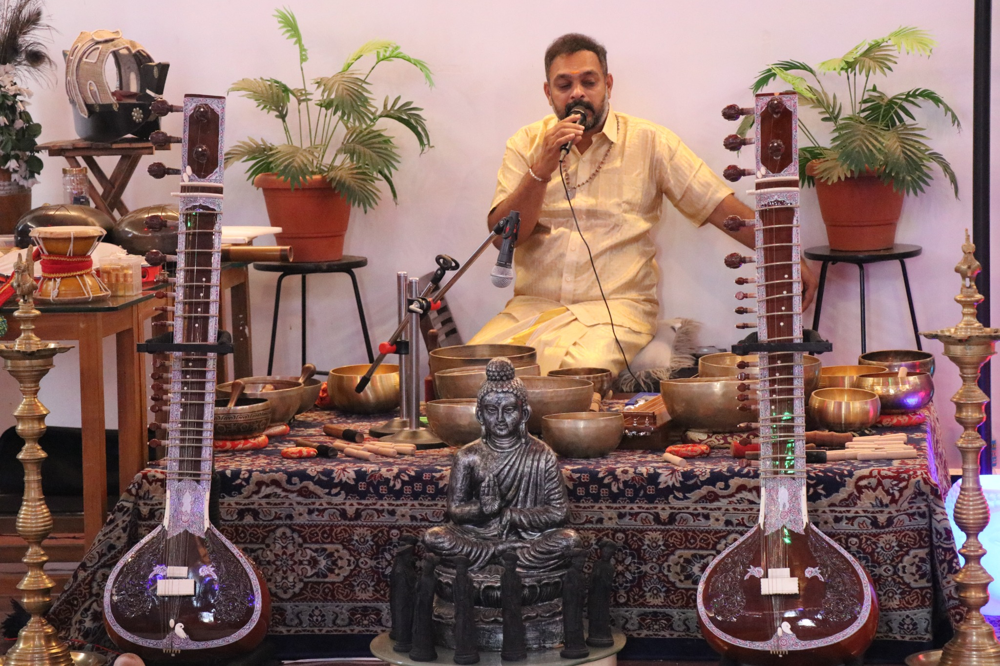
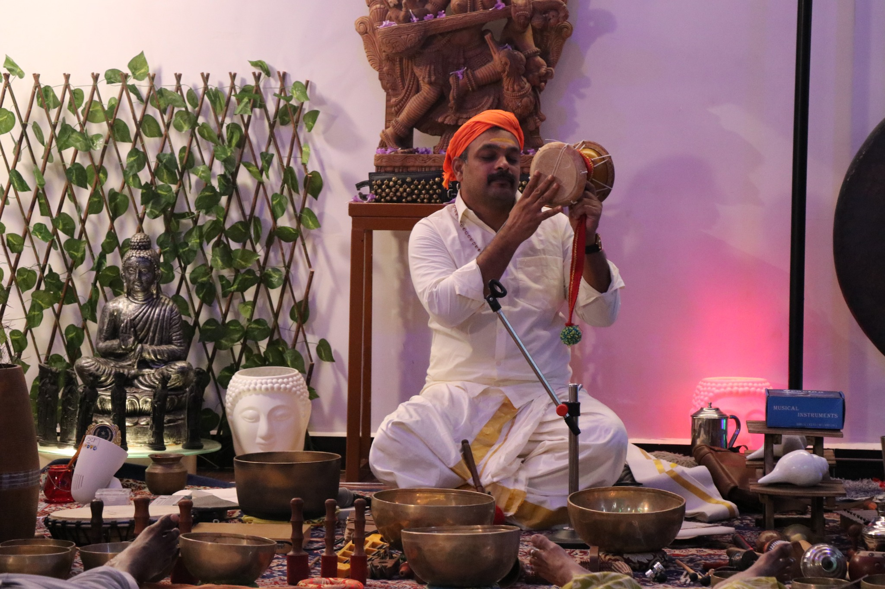
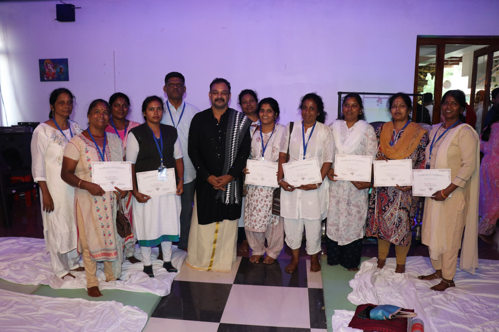
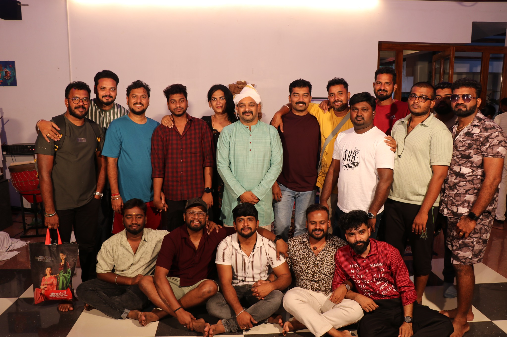

DAY 01
அடித்தளம் & ஒலி அனுபவம்
Sound basics, கவனமுடன் கேட்பது, மூச்சு மற்றும் அமைதிப் பயிற்சி, ஒலி-உடல் அனுபவம், ஒலியின் அறிவியல் மற்றும் பாதுகாப்பு.
ஒலியை அனுபவிப்பதிலிருந்து, பல்வேறு இசைக்கருவிகளை கையாள்வது, தனிநபர் மற்றும் குழு ரிலாக்ஸேஷன் அமர்வுகளை வடிவமைப்பது, உங்கள் சொந்த வெல்னஸ் பயிற்சியை உருவாக்குவது வரை — படிப்படியாக கற்றுக்கொள்ளுங்கள்.

நீங்கள் பகிர்ந்த உண்மையான பயிற்சி புகைப்படங்களை மையமாகக் கொண்டு உருவாக்கப்பட்ட பாடத்திட்ட லேண்டிங் பேஜ். கருவி அறிமுகம், வழிநடத்தப்பட்ட அமர்வுகள், குழுப் பயிற்சி, மாணவர் அனுபவம் ஆகியவை தனித்தனி பகுதிகளாக அமைக்கப்பட்டுள்ளன.
Singing bowls, gong, tuning forks, drums, bells, chimes மற்றும் பல கருவிகளை ஒப்பிட்டு அறிதல்.
ஒலியின் அளவு, இடைவெளி, ஒலித் தன்மை, அமர்வு ஓட்டம் ஆகியவற்றை கவனத்துடன் பயன்படுத்துதல்.
தொடக்கம், பாதுகாப்பு விளக்கம், guided relaxation, அமைதியான நிறைவு மற்றும் feedback.
வொர்க்ஷாப் திட்டமிடல், வாடிக்கையாளர் தொடர்பு, உள்ளடக்க உருவாக்கம் மற்றும் விலை நிர்ணயம்.


.JPG)
மூன்று நாட்களிலும் அனுபவம், கருவிப் பயிற்சி, அமர்வு வடிவமைப்பு, மதிப்பீடு ஆகியவை படிப்படியாக இணைக்கப்படுகின்றன.
Sound basics, கவனமுடன் கேட்பது, மூச்சு மற்றும் அமைதிப் பயிற்சி, ஒலி-உடல் அனுபவம், ஒலியின் அறிவியல் மற்றும் பாதுகாப்பு.
Singing bowls, gong, tuning forks, drums, chimes, voice மற்றும் பிற கருவிகளின் நடைமுறைப் பயிற்சி; தனிநபர் / குழு அமர்வுகள்.
அமர்வு வடிவமைப்பு, வழிநடத்தும் திறன், feedback, ethics, workshop திட்டம், பிராண்டிங் மற்றும் இறுதி practical demonstration.
ஒவ்வொரு மாட்யூலிலும் என்ன கற்றுக்கொள்வீர்கள் என்பதைப் படிக்கவும். தேடல் பெட்டியில் “gong”, “frequency”, “business” அல்லது தமிழ் சொற்களை உள்ளிடலாம்.
குறிப்பு: இந்தப் பயிற்சி வெல்னஸ், ஓய்வு மற்றும் கவனமுடன் வழிநடத்தப்படும் ஒலி அனுபவத்தை மையமாகக் கொண்டது. மருத்துவ நோய்களுக்கு குணமாகும் என்ற உத்தரவாதம் அல்ல; மருத்துவ சிகிச்சைக்கு மாற்றாகாது.
ஒவ்வொரு கருவியின் ஒலித் தன்மை, வாசிக்கும் முறை, ஒலியின் தீவிரம் மற்றும் பயன்படுத்தும் சூழலை நேரடிப் பயிற்சியில் அறிதல்.
மென்மையான ஒலி அடுக்குகள், நீடித்த resonance, தொடக்க மற்றும் நிறைவு ஒலி.

பரந்த ஒலி அலைகள்; ஒலியளவு, தூரம் மற்றும் பங்கேற்பாளர் வசதியை கவனித்து பயன்படுத்துதல்.

கருவிகளின் வரிசை, இடைவெளி, அமைதியின் நேரம் மற்றும் மென்மையான நிறைவு.
நீங்கள் வழங்கிய புகைப்படங்கள் அனைத்தும் இந்தப் பக்கத்தில் இணைக்கப்பட்டுள்ளன — சான்றிதழ் வழங்கல், குழு புகைப்படங்கள், நேரடி கருவிப் பயிற்சி மற்றும் guided relaxation.

விளக்கத்தைக் கேட்பதோடு நிற்காமல், கருவிகளைப் பார்ப்பது, முயற்சி செய்வது, பிறருடன் பயிற்சி செய்வது, பின்னூட்டம் பெறுவது ஆகியவற்றை மையமாகக் கொண்ட பயிற்சி அமைப்பு.
பயிற்சியில் பங்கேற்பவர்களின் வசதி, ஒலி உணர்திறன், உடல் நிலை மற்றும் தனிப்பட்ட எல்லைகளை மதிப்பது முக்கியம்.
சவுண்ட் ஹீலிங் மற்றும் வெல்னஸ் பயிற்சியை அறிந்துகொள்ள விரும்பும் தொடக்கநிலையினர், யோகா / தியான வழிநடத்துநர்கள், ரெய்கி பயிற்சியாளர்கள் மற்றும் குழு அமர்வுகளை நடத்த விரும்புபவர்கள். முன் அனுபவம் தேவையா என்பதை பதிவு செய்வதற்கு முன் உறுதிப்படுத்தவும்.
100 மாட்யூல்கள் முழுப் பாடத்திட்ட வரைபடமாக வழங்கப்பட்டுள்ளன. 3 நாள் நேரடி நிகழ்வில் தேர்ந்தெடுக்கப்பட்ட முக்கிய அம்சங்களுக்கு விளக்கம், demo மற்றும் hands-on practice வழங்கப்படும்; ஒவ்வொரு மாட்யூலுக்கும் சமமான நேரம் கிடைக்கும் எனப் பொருள் கொள்ள வேண்டாம்.
இந்தப் பக்கம் மருத்துவ குணப்படுத்தல் வாக்குறுதி அளிக்கவில்லை. ஒலி அமர்வுகள் சிலருக்கு ஓய்வு மற்றும் நலவாழ்வு அனுபவமாக இருக்கலாம்; மருத்துவ மதிப்பீடு அல்லது சிகிச்சைக்கு மாற்றாகாது.
முன்கூட்டியே பயிற்சியாளரிடம் தெரிவிக்கவும். அதிக ஒலியுள்ள கருவிகளைத் தவிர்க்கவும் அல்லது தூரத்தை அதிகரிக்கவும்; எந்த நேரத்திலும் அமர்வை நிறுத்தும் உரிமை பங்கேற்பாளருக்கு உண்டு.
இந்த template-இல் இன்னும் உறுதி செய்யப்படாத தேதி, இடம், கட்டணம், தொடர்பு எண் ஆகியவை திட்டமிட்டு நிரப்பப்படவில்லை. உங்கள் உண்மையான விவரங்களை கீழே உள்ள பதிவு பகுதியில் சேர்க்கவும்.
முழுப் பாடத்திட்டம், அடுத்த நிகழ்வு தேதி, இடம், கட்டணம் மற்றும் பதிவு விவரங்களைப் பெற தாலம் குழுவைத் தொடர்புகொள்ளுங்கள்.
பயிற்சி விவரங்கள் கேட்கவெப்சைட்டில் வெளியிடும் முன் மின்னஞ்சல், WhatsApp எண், நிகழ்வு தேதி, இடம், கட்டணம் மற்றும் பதிவு இணைப்பை உங்கள் உண்மையான விவரங்களால் மாற்றவும்.